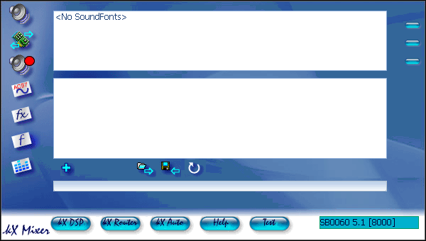
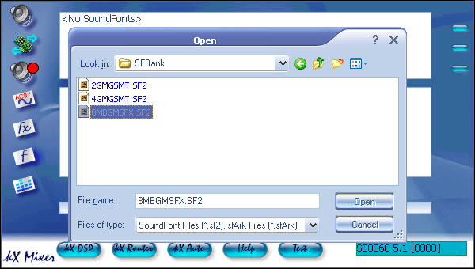
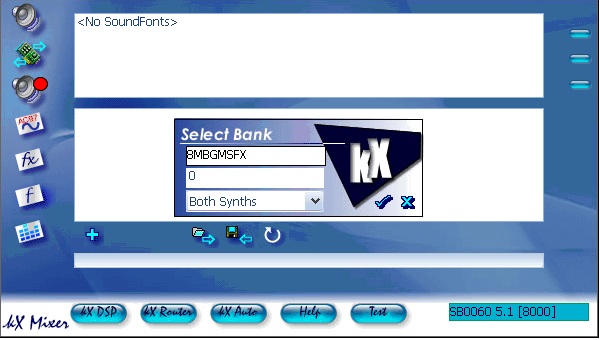
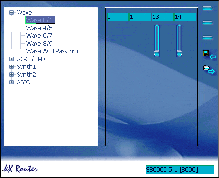
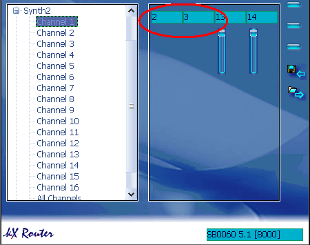
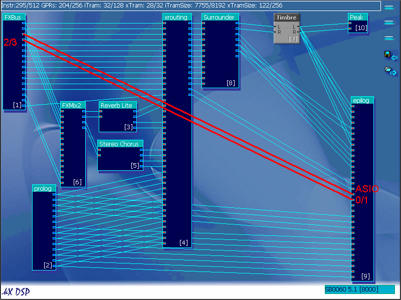
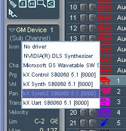
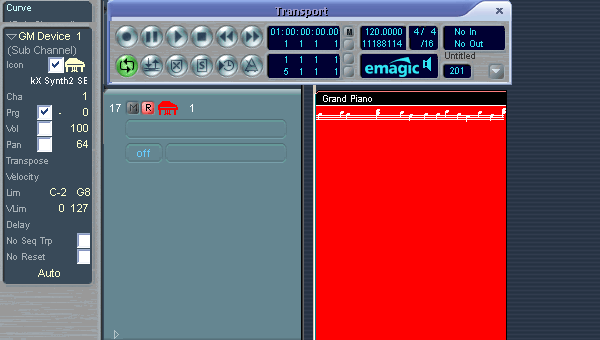
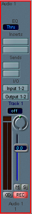

This part of the guide will show you how to record Soundfonts
in an ASIO host, using Logic as an example.
Notes:
The ASIO host I will use in this guide is Logic. If you have any problems configuring a different ASIO host, please search the kX Forums.
Certain Soundblaster Live 5.1 Models, SB0060 & SB010x, have ASIO mapping errors,
ie the ASIO inputs on the epilog in the DSP do not match up with the ASIO inputs
in the host, and as I have one of these cards, I will show you the steps on
how to bypass this, but for users of different cards, those steps will be marked
with a "*" and
are optional.
This setup was carried out
on Windows XP Professional with a custom theme, so don't be alarmed if the
message boxes look a little wierd or some don't pop up.
Soundfont Window

To record a soundfont, first you have to load one.

Click
on the plus symbol (+) and then navigate to a soundfont file.
The load the soundfont.

Select Both Synths in the dropdown menu
Routing
The router window is where each software output is mapped to the FXBus in the
DSP, to be routed to a physical output.

As Synth2 is the default soundfont , I will check the settings
for Synth2

The two numbers
circled are the two fxbus channels that Synth2 uses as it's output.
To get this working in an ASIO host, you need to map this to an ASIO channel
in the DSP

The two red lines
represent the routing you should have (it does not matter which ASIO stereo
channel you choose).
To create a "wire" between an output and an input, hold the mouse button over
the output, then drag over until the mouse is over the input you wish to connect
to, then release the mouse. The wire should now be in place.
Note: In some ASIO hosts, ASIO inputs 4/5 may be called 5/6
due to the count starting from 1 instead of 0 as is the case with kX.
Now it is time to load your ASIO host program. I will use Logic version 5.5.1
Note: This procedure will be different for each ASIO host sequencer, if you
know enough about the sequencer you have, read this section and try to setup
your sequencer. If you cannot do this search the kX
Forums for an answer.
In the Audio Driver setup window

Make sure that you ASIO device is kX ASIO Driver and that it
is active.
Click the control panel button…

…and make sure that the samplerate is 48000hz (48khz), otherwise you will
not be able to record.
Then select a Midi channel in the arrange window

And select Synth2 as the Midi Driver

(*)Write a simple Midi tune in the Midi channel, and set it
to loop, you should then hear a soundfont playing.
Open the track mixer and select an Audio Channel
 ->
->
Click the mono/stereo switch as shown

As you can see, the default inputs are channels 1 & 2, which
is where we routed the soundfont output to,but for users of card models SB0060
& SB010x, this may not be the case.
(*)Press play on the transport, and
see if there is level shown in the peakmeter for Audio 1, if not try a new
stereo pair of inputs until you find one with level
 ->
You have now learnt how to record Soundfonts in an ASIO host.

Top Index
kX Guide © 2004 by Chris Stannard, a kX
user. All rights reserved.